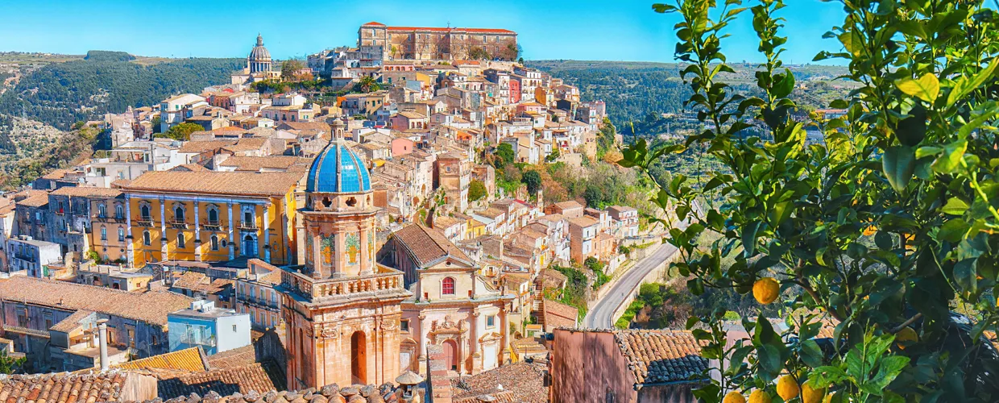

TI DIAMO IL BENVENUTO ALL'HOTEL POMELIA
Dove la sostenibilità incontra il comfort
LA NOSTRA STORIA
Da tre generazioni portiamo avanti la tradizione alberghiera di famiglia.
Allo stesso tempo, vogliamo innovare per ridurre l'impatto ambientale della struttura.
Per questo motivo abbiamo deciso di ristrutturare l'hotel, seguendo i valori della sostenibilità, rispetto dell’ambiente e valorizzazione del territorio.
Hotel Pomelia S.r.l. è il primo hotel in Sicilia ad aver ottenuto la certificazione di Società Benefit, confermando il suo impegno per la sostenibilità e il benessere del territorio.
LA NOSTRA STRUTTURA
L’intera struttura è alimentata da energia rinnovabile, con una parte dell’energia prodotta autonomamente grazie ai pannelli solari. Le camere sono arredate con mobili realizzati a partire da materiali di recupero, trasformati da artigiani e artisti locali. Questo permette di dare nuova vita ai materiali trasformandoli in pezzi unici come comodini, specchi e altri complementi d’arredo.
Tutta la biancheria dell’hotel è stata recentemente sostituita con tessuti in cotone biologico certificato GOTS e canapa, un materiale a basso impatto ambientale che non rilascia microplastiche durante i frequenti lavaggi. La biancheria dismessa è stata donata a una Onlus locale, che la distribuisce a famiglie in difficoltà.
COSA PROPONIAMO
La nostra struttura offre diverse opzioni di soggiorno a scelta tra cui:
- Colazione inclusa
- Mezza pensione
- Pensione completa
La nostra cucina propone piatti esclusivamente a km 0, molti dei quali provengono direttamente dal nostro orto biologico.
Altri prodotti vengono acquistati da produttori locali selezionati.
I nostri ospiti hanno inoltre accesso a una spiaggia attrezzata, priva di barriere architettoniche e completamente accessibile.
Su prenotazione, inoltre, è possibile richiedere servizi aggiuntivi tra cui:
- Visite guidate alla scoperta del territorio con guide turistiche locali.
- Escursioni di trekking accompagnate da una guida esperta della zona.
Per chi desidera invece un'esperienza all'insegna delle tradizioni gastronomiche e agricole del territorio proponiamo:
Workshop sulla cucina siciliana e laboratori alla scoperta dei prodotti locali.
Se siete una famiglia o una coppia alla ricerca di un’esperienza di viaggio autentica e sostenibile, questo è il posto giusto per voi.
SEGUICI SUI SOCIAL
 Facebook
Facebook